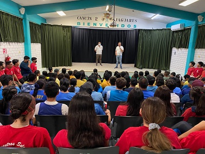

Colegio De Bachilleres Plantel Cancun 2
Si piensas estudiar un bachillerato, esta es tu mejor opcion.
Colegio De Bachilleres Plantel Cancun 2
El Colegio de Bachilleres, institución educativa de nivel medio superior del Gobierno Federal con oficinas generales en la capital del país, contribuye de manera importante a la atención de la demanda del bachillerato general en la Zona Metropolitana de la Ciudad de México, a través de su sistema escolarizado distribuido en 20 planteles en dos turnos, así como su Sistema de Enseñanza Abierta (SEA) en cinco centros de estudio de la modalidad no escolarizada. También se atiende mediante este sistema a población recluida en centros correccionales del país.
Colegio de Bachilleres plantel Cancín dos es una excelente opción educativa para los estudiantes que concluyen la secundaria, ya que ofrece una formación integral, preparándolos para la vida, el trabajo y los estudios superiores.Los estudios de bachillerato que imparte son reconocidos en todo el territorio nacional por las instituciones de nivel superior. Además es una de las escuelas con mayor prestigio y sus alumnos y profesores son reconocidos a nivel nacional.
Asi que ya sabes, ya que conoces nuestro colegio, ven a convivir y aprender con nosotrosy ser alguien mejor en la vida.
